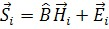
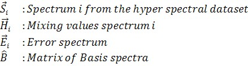
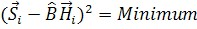
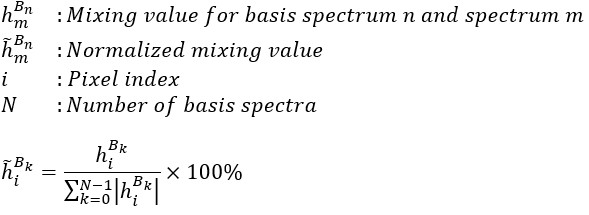
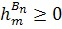

基分析的思想是通过已知光谱的线性组合来描述一个测量的光谱或完整的高光谱数据集。用于线性组合的混合值是此分析的结果。除基光谱外，常数背景光谱也必须事先已知。通常后者在使用基分析算法之前被扣除。该算法基于以下基本方程，该方程在文章 光谱叠加（数学）中有详细解释：

对于基分析，方程可以简化为：


混合值通过最小二乘法拟合，最小化以下表达式：

百分比图像使用以下公式计算：

另请参阅
备注
选择正确的基
为了分析拉曼光谱，重要的是首先使用包含所有现有组分的基矩阵，其次基光谱必须是纯光谱。这确保结果具有物理意义。如果基光谱取自高光谱数据集的平均过程，则在使用基分析之前可能需要进行分解过程（参见 基光谱分解（数学））。
在大多数情况下，获取基光谱的最佳方法是使用相同的高光谱数据集，而不是从数据库或旧测量中获取光谱。这保证了基光谱是在相同实验条件下记录的，并且拟合不包含任何系统误差（相同的光谱仪、光栅、光谱中心位置、校准、物镜、激光激发、光纤等）。
约束最小化（拟合）
使用基分析时，通常只有正的混合值才是合理的：在拉曼分析中，负值对应于负物质，这在物理上没有意义。因此，可以通过仅允许正的混合值来约束拟合上述方程：

约束拟合可用于确定基组分是否混合。